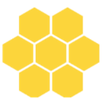
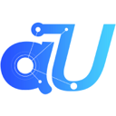
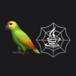

Multi-agent orchestration tools for building AI agents
Frameworks for teams of agents that hand work to each other, split tasks and check each other's output. Of the 222 tools on our building AI agents page, 35 fit this narrower job. By pricing: 35 open source. The most-starred open repos here are Ruflo (74,609 stars), MetaGPT (70,885 stars), AutoGen (61,395 stars). Most come from the frameworks (32), memory & RAG (1), browser/computer use (1) categories.
Updated
Ruflo
Open-source multi-agent meta-harness for Claude Code, Codex, and MCP clients; Oct 13 release adds Mods (mission workflows) and a single control plane with human approval.
Added
MetaGPT
Multi-agent framework that assigns roles like product manager and engineer to LLM agents to build software.
Added
AutoGen
Microsoft's framework for multi-agent conversations, now archived and no longer maintained; Microsoft points new users to Microsoft Agent Framework.
Added
CrewAI
Framework for role-based multi-agent crews.
Added
Agno
Python framework and runtime for building, running and managing multi-agent systems with memory, knowledge and tools.
Added
ChatDev
Zero-code multi-agent platform from OpenBMB, grown from a software-development agent company into a general multi-agent orchestration system.
Added
AgentScope
Framework for building and running transparent multi-agent applications with visual debugging.
Added
Orkes
Orchestration platform built on Conductor for durable workflows and AI agents.
Added
LangChain Deep Agents
Library for long-running agents with subagents and skills; 0.7.23 (Oct 7) adds pinned_skills.
Added
OpenAI Agents SDK (Python)
OpenAI's Python SDK for building multi-agent workflows; v0.23.0/0.23.1 released Oct 1-2.
Added
Haystack
Open-source orchestration framework for building production LLM apps, RAG and agents.
Added
CAMEL
CAMEL, one of the first multi-agent frameworks, for building role-playing agents and large agent societies.
Added
Microsoft Agent Framework
Microsoft's framework for building and orchestrating agents and multi-agent workflows in Python and .NET.
Added
txtai
All-in-one Python framework for semantic search, LLM orchestration and agents built on an embeddings database of vector, graph and relational indexes.
Added
Aden Hive
Multi-agent harness for production AI.
Added
Omnigent
Open-source agent framework and meta-harness that orchestrates Claude Code, Codex, Cursor and other agents together.
Added
UFO
Microsoft's desktop agent framework that operates Windows apps and orchestrates multi-device tasks as task graphs.
Added
PraisonAI
Multi-agent framework for building a self-improving AI workforce with little code.
Added
Flyte
Type-safe orchestration for agents, ML pipelines and inference on Kubernetes.
Added
Swarms
Enterprise multi-agent orchestration framework.
Added
Open Multi-Agent
Self-hosted TypeScript agent runtime with durable approvals and verifiable run records.
Added
AG2
AG2, the community continuation of AutoGen, an open-source framework for multi-agent systems.
Added

Agency Swarm
Multi-agent orchestration framework built on the OpenAI Agents SDK for creating collaborating agent "agencies" with defined roles.
Added
Dagu
Self-hostable workflow orchestrator with a simple definition format and web UI, usable for agent jobs.
Added
Langroid
Python framework for multi-agent programming with LLMs.
Added
LazyLLM
Low-code framework for building multi-agent LLM applications.
Added
BeeAI Framework
Framework for building production-ready agents and multi-agent systems in Python or TypeScript.
Added
BotSharp
Multi-agent framework for .NET.
Added

agentUniverse
Multi-agent framework with reusable collaboration patterns for building LLM agent applications.
Added
Neuron AI
PHP framework for creating and orchestrating AI agents with LLMs, tools, vector stores and memory.
Added

LangGraph4j
Java library for building stateful multi-agent applications as graphs, working with LangChain4j and Spring AI.
Added
Jido
Elixir framework for building supervised, fault-tolerant agents and multi-agent systems on the BEAM.
Added
KaibanJS
JavaScript-native framework for building and managing multi-agent systems with a Kanban-style board for agent tasks.
Added
Pydantic Deep Agents
Self-hosted terminal AI assistant and Python framework on Pydantic AI, with tool calling, sandboxed execution, multi-agent teams and checkpoints.
Added
Dynamiq
Python orchestration framework for building agentic and RAG applications from reusable nodes and workflows.
Added
GitHub repos (35)
| Repo | GitHub stars | Licence | Last push |
|---|---|---|---|
| 74,609 | MIT | 2026-10-18 | |
| 70,885 | MIT | 2026-01-21 | |
| 61,395 | MIT for code (LICENSE-CODE); CC-BY-4.0 for documentation | 2026-10-16 | |
| 59,675 | MIT | 2026-10-19 | |
| 42,769 | Apache License 2.0 | 2026-10-19 | |
| 34,545 | Apache License 2.0 | 2026-10-16 | |
| 33,376 | Apache License 2.0 | 2026-10-19 | |
| 32,319 | Apache License 2.0 | 2026-10-16 | |
| 30,236 | MIT | 2026-10-19 | |
| 30,023 | MIT | 2026-10-17 | |
| 26,748 | Apache License 2.0 | 2026-10-19 | |
| 17,911 | Apache License 2.0 | 2026-10-19 | |
| 14,169 | MIT | 2026-10-19 | |
| 13,024 | — | 2026-10-16 | |
| 11,107 | Apache License 2.0 | 2026-10-19 |
Top 15 of 35 by stars. Stars and licence come from each repo, checked when the listing was last verified.
FAQ
What are the best AI tools for building AI agents focused on multi-agent orchestration?
We list 35. The first three by GitHub stars and featured status are Ruflo: Open-source multi-agent meta-harness for Claude Code, Codex, and MCP clients; Oct 13 release adds Mods (mission workflows) and a single control plane with human approval.; MetaGPT: Multi-agent framework that assigns roles like product manager and engineer to LLM agents to build software.; AutoGen: Microsoft's framework for multi-agent conversations, now archived and no longer maintained; Microsoft points new users to Microsoft Agent Framework.
Are there free or open-source options?
Yes: 35 open source. Pricing is as each maker states it.
More from building AI agents
Tools are grouped by what each says it does. Missing one? Submit it free.